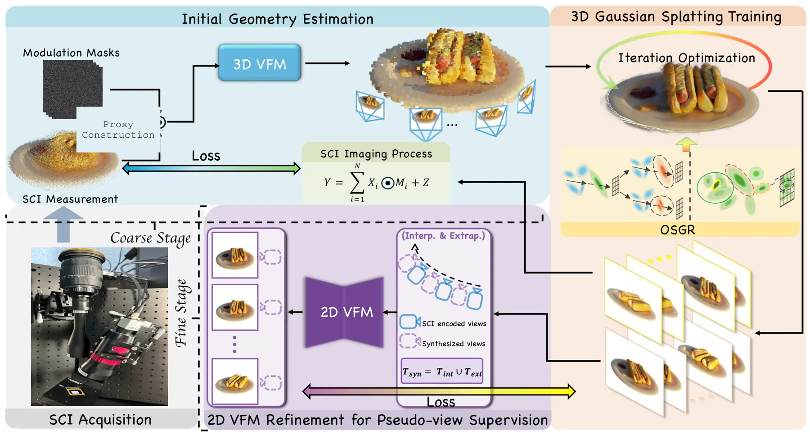
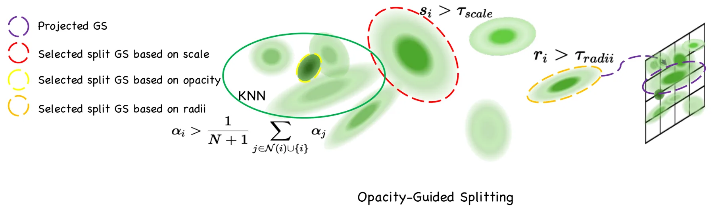
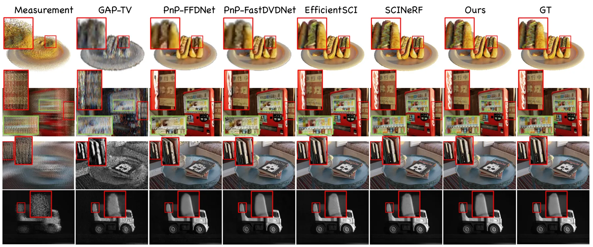
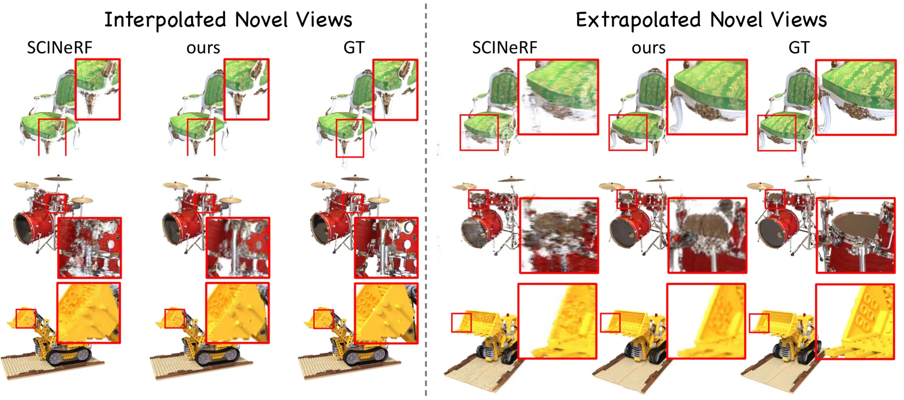
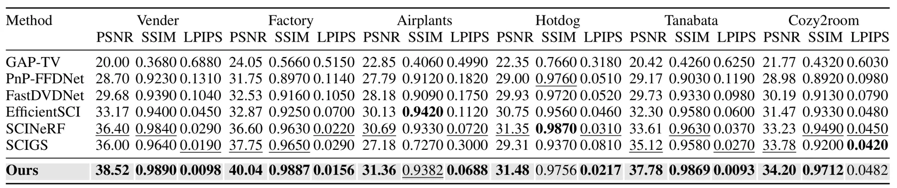
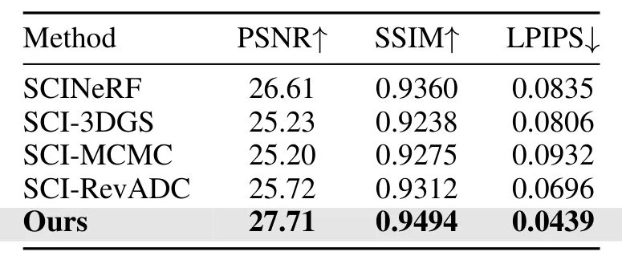

GS²CI：借助大视觉模型先验的 snapshot compressive imaging 3DGS 重建GS$^{2}$CI: Robust Gaussian Splatting For Snapshot Compressive Imaging via Large Vision Model Priors
单测量三维重建与 3DGS 稳定 densification 具有较强方法价值，且针对视角不足这一核心问题；但依赖特殊 SCI 成像和 VFM 伪视图，距常规 SLAM/在线重建仍有明显距离。
一句话工作总结
以 3D/2D 大视觉模型先验补偿单次 SCI 测量的信息缺失，并用 opacity-guided densification 稳定 3DGS 优化。
摘要
GS²CI 从单个 snapshot compressive imaging（SCI）measurement 重建高质量三维场景。主流程将 measurement-derived 3D vision foundation model initialization 与 SCI-aware Gaussian optimization 结合；coarse stage 收敛后，再由辅助 2D VFM 在合成视角提供 pseudo-view supervision，细化局部外观。为缓解 SCI supervision 歧义导致的 3DGS 优化不稳定，方法提出 Opacity-Guided Splitting and Growth Regulation：利用局部 opacity 统计扩展 split candidates，以 mean-opacity regulation 抑制补偿性 opacity inflation，并用候选比例和 Gaussian 数量约束控制表示增长。摘要称其在多个 benchmark 上取得最强综合质量、视角变化鲁棒性和有竞争力的效率。
Snapshot Compressive Imaging (SCI) offers an efficient solution for high-speed video acquisition and, under exposure-time camera--scene relative motion, multi-view scene capture by compressing temporal or spatial information into a single 2D measurement. While recent studies have explored SCI for 3D scene reconstruction, existing methods struggle with significant challenges due to information loss, limited viewpoint diversity, and the computational burden of jointly optimizing 3D representations and camera poses. In this work, we propose a novel framework that reconstructs high-quality 3D scenes from a single SCI measurement by leveraging 3D Gaussian Splatting (3DGS) and the powerful priors of large-scale vision foundation models (VFMs). Our primary reconstruction combines measurement-derived 3D VFM initialization with SCI-aware Gaussian optimization. After coarse-stage convergence, an auxiliary 2D VFM provides pseudo-view supervision at synthesized viewpoints for local appearance refinement. To further address the instability caused by ambiguous SCI supervision during 3DGS optimization, we introduce Opacity-Guided Splitting and Growth Regulation (OSGR), an SCI-specific densification strategy that augments split candidates using local opacity statistics, discourages loss-compensating opacity inflation through mean-opacity regulation, and bounds representation growth with explicit candidate-ratio and Gaussian-count constraints. Extensive experiments across multiple benchmarks demonstrate that our method achieves the strongest overall performance, combining leading reconstruction quality and robustness to viewpoint variation with competitive computational efficiency.
中文解读摘录
- 价值：从单个 SCI measurement 恢复三维场景，将 measurement-derived 3D VFM initialization、SCI-aware Gaussian optimization 与伪视图监督结合，针对信息损失和视角不足问题提供新的 3DGS 重建路线。
- 方法与结果：coarse stage 后由辅助 2D VFM 在合成视角产生 pseudo-view supervision；Opacity-Guided Splitting and Growth Regulation（OSGR）通过局部 opacity 统计补充 split candidates、抑制 opacity inflation，并显式限制 Gaussian 增长。摘要称在多个 benchmark 上获得最强综合质量与稳健性，同时维持有竞争力的效率。
- 关注点：应核查真实 SCI 成像模型与标定误差、camera–scene relative motion 假设、VFM pseudo views 引入 hallucination 的风险，以及与常规多视图采集在总曝光和计算预算下的公平性。
- 链接：arXiv · PDF
图表/页面预览

{kind=link}

{kind=link}

{kind=link}

{kind=link}

{kind=link}

{kind=link}
